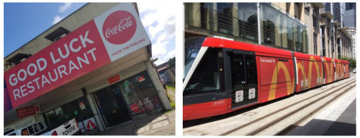

<body>

<div>
    <div>
        <div>
            <div class="container">
                <div>
                    <div style="text-align: center">
                        <a href="link">
                            
                            
                        </a>
                    </div>

                    <h1>Terms and Conditions
                    </h1>
                    <p>Dear valued member of the community,</p>
                    <p>This Plain Language Statement and Consent Form outlines the purpose and scope of our research project. Please read the following information carefully.
                    <p><strong>Purpose: This research project aims to quantify the nature and extent of alcohol, cigarette, food/drink and gambling advertising that children are exposed to on their route to or from primary and secondary schools.</strong> This will be done using SCANNER, an app that we have developed for citizens to capture images of product advertisements and contribute to a growing image library. We will apply Artificial Intelligence techniques to this image library to ultimately develop the first-ever automated system for monitoring unhealthy advertising to children. Such monitoring can inform policy changes that are urgently needed to protect children from this kind of commercial exploitation.</p>

                </div>

                <!--
                <h2 id="what-the-user-should-know-at-a-glance">What the User should know at a glance</h2><hr>

                <h2 id="terms-of-use">TERMS OF USE</h2><p>Unless otherwise specified, the terms of use detailed in this section apply generally when using this Application.</p>

                -->

                <hr>
                <div>
                    
                </div>
                <p>

                </p>
                <p><strong>Your role:</strong> We are recruiting parents/carers of children in primary or secondary school. Parents/carers will be asked to collect images or videos of food, alcohol, tobacco, and gambling advertising as they are on route (walking, driving, or taking public transport) to their child/ren’s school/s. This will include outdoor ads on public transport, billboards, shopfronts, sports venues, etc. Some examples include: </p>

                <p>This data collection can be done once-off and should only add a few extra minutes to your normal commute to your child’s school.</p>
                <p>As you collect images of advertisements, we may ask you tag the products being advertised (e.g. type of unhealthy food/drink, tobacco, alcohol, etc.). We will also collect the geolocation of where your pictures were captured to assess the distance of adverts from schools and differences in advertising across areas. Geolocation data will not be linked to personal information or used to identify your personal location. Please do not capture images of people and ensure that you only capture images when it is safe to do so (i.e. images should NOT be captured while driving. If you drive to your child’s school, you should safely park your vehicle and capture the images).</p>
                <p>Once you have provided consent to participate in our study, you will be asked to:</p>
                <ol>
                    <li>Complete an initial 5-10 minute survey (essential) to collect background information about you and your attitudes to the app and food/drink, alcohol, gambling, and tobacco advertising,</li>
                    <li>Download our SCANNER app and watch a video tutorial on how to use the app to capture images of advertisements (essential; or attend a short briefing/interview with a researcher if necessary),</li>
                    <li>Complete a 5-10 minute survey (essential) once you have completed data collection</li>
                </ol>

                <p>We may also ask you to complete a focus group (1 hour/non-essential) with a researcher and other participants at the end of the study to discuss experiences with collecting advertising data for the study.</p>
                <p>Once your participation in this study is complete, you will be provided with a $20 sports voucher for your time. </p>

                <p><strong>Benefits and risks:</strong> Participation in this research project will help us to advance our understanding of the extent and nature of unhealthy advertising that children are exposed to on their route to or from school. A better understanding of the exposure of unhealthy product advertising is important to inform and evaluate policies that can effectively reduce this exposure, particularly among children, in Australia and internationally.</p>

                <p>This study will also advance the technology that is available to monitor unhealthy advertising to children. Unhealthy advertising has been recognized globally as a risk factor for unhealthy attitudes and behaviours across the life-course. Leading health bodies, including Cancer Council Victoria, the World Cancer Research Fund International, and the World Health Organization consistently recommend that governments take regulatory actions to reduce the influence of unhealthy advertising – but few governments have implemented these types of policies to date.</p>

                <p>The benefits of participating in this project outweigh any foreseeable risks. The only foreseeable risk may be the inconvenience of using your time to take pictures of advertisements and complete surveys, a briefing/interview and a focus group (optional).</p>

                <p><strong>Privacy and confidentiality:</strong> To protect your privacy and confidentiality, and that of third parties, the following apply to the images or videos that you upload to our crowdsourcing platform:</p>

                <ul>
                    <li><strong>Identifiable features:</strong> All identifiable features should be obscured by participants using the edit/brush tool on the app and will be obscured in any published research reports unless they are publicly available (i.e. faces in advertisements).</li>

                    <li><strong>Settings:</strong> Do not take images or videos in settings where photography is prohibited or inappropriate. These include, but are not limited to, some workplaces, banks, medical centers, swimming pools, bathrooms, Aboriginal and Torres Strait Islander communities, military institutions and airport security. Pictures should NOT be captured while you are driving.</li>

                    <li><strong>Inappropriate material:</strong> If images or videos depict illegal or inappropriate activities, they will be removed by the research team and the relevant authorities will be notified in accordance with the law. These may include (but are not limited to) texting and driving, drinking and driving, taking illicit substances, criminal damage, sexual violence, child abuse and hate crimes.</li>

                    <li><strong>Data storage and access:</strong> All data will be securely stored on locked drives at Deakin University. Only members of the research team and collaborators who receive ethics approval and have a common vision to improve population health will have access to the image library.</li>
                </ul>

                <p>
                    <strong>Research reports and publications:</strong> All research outputs will report on findings in an aggregated form. Whilst the general public will not have access to the data you provide, advertising examples may be published. In this event, any identifiable features (e.g. faces) that are not publicly available will be obscured.
                </p>

                <p>
                    If you would like to receive research updates and findings, please provide your email at the end of this Plain Language Statement.
                </p>

                <p><strong>Project management and monitoring:</strong> The research team (which consists of highly skilled public health and IT researchers) led by A/Prof Kathryn Backholer will meet fortnightly to discuss and manage this project. Annual reports will also be submitted to the Deakin University ethics committee.</p>

                <p><strong>Data custodianship and copyright:</strong> Participants will reserve the right to use their images and videos as they like. However, Deakin University will be the custodians of the combined, crowdsourced image library. The researchers will hold all copyright of the research publications.</p>

                <p><strong>Funding:</strong> This research is funded by Cancer Council Victoria and Deakin University. The research team also receives funding from the National Heart Foundation and VicHealth. The researchers have no conflicts of interest to declare.</p>

                <p><strong>Withdrawing your participation:</strong> Participation in this research project is voluntary. You have the right to withdraw from the study at any stage prior to data analysis. Please contact a member of the research team (details below) if you would like to withdraw your data. Your withdrawal or non-participation will not affect your relationship with Deakin University, the researchers or funding bodies.</p>

                <p><strong>Complaints:</strong>
                    If you have any complaints about any aspect of the project, the way it is being conducted or any questions about your rights as a research participant, then you may contact: </p>

                <p>The Human Research Ethics Office, Deakin University, 221 Burwood Highway, Burwood Victoria 3125, Telephone: 9251 7129, <a href="mailto: research-ethics@deakin.edu.au">research-ethics@deakin.edu.au</a></p>

                <p>Please quote project number <strong>[201X-XXX]</strong>.</p>

                <p>
                    <strong>Contact us via email, phone or the SCANNER Facebook page:</strong>
                </p>

                <p>
                    Dr Christina Zorbas
                </p>
                <p>
                    <a href="mailto: c.zorbas@deakin.edu.au">c.zorbas@deakin.edu.au</a> <strong>03 9246 8772</strong>
                </p>

                <p>
                    Dr Florentine Martino
                </p>
                <p>
                    <a href="mailto: florentine.martino1@deakin.edu.au">florentine.martino1@deakin.edu.au</a> <strong>03 5227 3413</strong>
                </p>

                <p>
                    A/Prof Kathryn Backholer
                </p>
                <p>
                    <a href="mailto: Kathryn.backholer@deakin.edu.au">Kathryn.backholer@deakin.edu.au</a> <strong>03 924 43836</strong>
                </p>

                <hr>
                <h1>Consent
                </h1>

                <p>
                    I have read and I understand the Plain Language Statement.
                </p>

                <p>
                    I freely agree to participate in this project according to the conditions in the Plain Language Statement.
                </p>

                <p>
                    I have access to a copy of the Plain Language Statement and Consent Form.
                </p>

                <p>
                    The researcher has agreed not to reveal my identity and personal details, including where information about this project is published, or presented in any public form.
                </p>

                <p>
                    I also confirm that:
                </p>

                <ul>
                    <li>Where identifiable features (e.g. faces) are shared in images and videos, I provide consent or have obtained consent from featured third parties for their use and will obscure them using the editing tool in the SCANNER app</li>
                    <li>I consent to the geolocation of my images being captured and used for research purposes only</li>
                    <li>I will not capture images unless it is completely safe to do so</li>
                    <li>My data being stored and used to inform ongoing and future research which is approved by the Deakin University ethics committee </li>
                    <li>My data being shared with research collaborators who receive approval from the Deakin University ethics committee and are aiming to improving population health</li>
                    <li>My email (if I choose to provide this) being used to provide research updates and invitations to participate in future research</li>
                </ul>


                <!--
                <p>Single or additional conditions of use or access may apply in specific scenarios and in such cases are additionally indicated within this document.</p>

                <p>By using this Application, Users confirm to meet the following requirements:</p>
                <h3 id="content-on-this_application">Content on this Application</h3>
                <p>Unless where otherwise specified or clearly recognizable, all content available on this Application is owned or provided by the Owner or its licensors.</p>

                <p>The Owner undertakes its utmost effort to ensure that the content provided on this Application infringes no applicable legal provisions or third-party rights. However, it may not always be possible to achieve such a result.<br>
                    In such cases, without prejudice to any legal prerogatives of Users to enforce their rights, Users are kindly asked to preferably report related complaints using the contact details provided in this document.</p>
                <h3 id="access-to-external-resources">Access to external resources</h3>
                <p>Through this Application Users may have access to external resources provided by third parties. Users acknowledge and accept that the Owner has no control over such resources and is therefore not responsible for their content and availability.</p>

                <p>Conditions applicable to any resources provided by third parties, including those applicable to any possible grant of rights in content, result from each such third parties’ terms and conditions or, in the absence of those, applicable statutory law.</p>
                <h3 id="acceptable-use">Acceptable use</h3>
                <p>This Application and the Service may only be used within the scope of what they are provided for, under these Terms and applicable law.</p>

                <p>Users are solely responsible for making sure that their use of this Application and/or the Service violates no applicable law, regulations or third-party rights.</p>

                <h2 id="common-provisions">Common provisions</h2><h3 id="no-waiver">No Waiver</h3>
                <p>The Owner’s failure to assert any right or provision under these Terms shall not constitute a waiver of any such right or provision.  No waiver shall be considered a further or continuing waiver of such term or any other term.</p>
                <h3 id="service-interruption">Service interruption</h3>
                <p>To ensure the best possible service level, the Owner reserves the right to interrupt the Service for maintenance, system updates or any other changes, informing the Users appropriately.</p>

                <p>Within the limits of law, the Owner may also decide to suspend or terminate the Service altogether. If the Service is terminated, the Owner will cooperate with Users to enable them to withdraw Personal Data or information in accordance with applicable law.</p>

                <p>Additionally, the Service might not be available due to reasons outside the Owner’s reasonable control, such as “force majeure” (eg. labor actions, infrastructural breakdowns or blackouts etc).</p>
                <h3 id="service-reselling">Service reselling</h3>
                <p>Users may not reproduce, duplicate, copy, sell, resell or exploit any portion of this Application and of its Service without the Owner’s express prior written permission, granted either directly or through a legitimate reselling program.</p>
                <h3 id="intellectual-property-rights">Intellectual property rights</h3>
                <p>Without prejudice to any more specific provision of these Terms, any intellectual property rights, such as copyrights, trademark rights, patent rights and design rights related to this Application are the exclusive property of the Owner or its licensors and are subject to the protection granted by applicable laws or international treaties relating to intellectual property.</p>

                <p>All trademarks — nominal or figurative — and all other marks, trade names, service marks, word marks, illustrations, images, or logos appearing in connection with this Application are, and remain, the exclusive property of the Owner or its licensors and are subject to the protection granted by applicable laws or international treaties related to intellectual property.</p>
                <h3 id="changes-to-these-terms">Changes to these Terms</h3>
                <p>The Owner reserves the right to amend or otherwise modify these Terms at any time. In such cases, the Owner will appropriately inform the User of these changes.</p>

                <p>Such changes will only affect the relationship with the User for the future.</p>

                <p>The continued use of the Service will signify the User’s acceptance of the revised Terms. If Users do not wish to be bound by the changes, they must stop using the Service. Failure to accept the revised Terms, may entitle either party to terminate the Agreement.</p>

                <p>The applicable previous version will govern the relationship prior to the User's acceptance. The User can obtain any previous version from the Owner.</p>
                <h3 id="assignment-of-contract">Assignment of contract</h3>
                <p>The Owner reserves the right to transfer, assign, dispose of by novation, or subcontract any or all rights or obligations under these Terms, taking the User’s legitimate interests into account.
                    Provisions regarding changes of these Terms will apply accordingly.</p>

                <p>Users may not assign or transfer their rights or obligations under these Terms in any way, without the written permission of the Owner.</p>
                <h3 id="contacts">Contacts</h3>
                <p>All communications relating to the use of this Application must be sent using the contact information stated in this document.</p>
                <h3 id="severability">Severability</h3>
                <p>Should any provision of these Terms be deemed or become invalid or unenforceable under applicable law, the invalidity or unenforceability of such provision shall not affect the validity of the remaining provisions, which shall remain in full force and effect.</p>


                <div class="one_line_col">
                    <div class="box_primary box_10 definitions expand">
                        <h3 class="expand-click w_icon_24 icon_ribbon">
                            Definitions and legal references
                        </h3>
                        <div class="expand-content">
                            <h4>This Application (or this Application)</h4>
                            <p>The property that enables the provision of the Service.</p>
                            <h4>Agreement</h4>
                            <p>Any legally binding or contractual relationship between the Owner and the User, governed by these Terms.</p>
                            <h4>Owner (or We)</h4>
                            <p>Indicates the natural person(s) or legal entity that provides this Application and/or the Service to Users.</p>
                            <h4>Service</h4>
                            <p>The service provided by this Application as described in these Terms and on this Application.</p>
                            <h4>Terms</h4>
                            <p>All provisions applicable to the use of this Application and/or the Service as described in this document, including any other related documents or agreements, and as updated from time to time.</p>
                            <h4>User (or You)</h4>
                            <p>Indicates any natural person or legal entity using this Application.</p>
                        </div>
                    </div>
                </div>
                -->
                <div class="iub_footer">

                    <p>
                        Latest update: May 18, 2021
                    </p>

                </div> <!-- /footer -->

            </div> <!-- /content -->
        </div> <!-- /wbars -->

    </div> <!-- /container base_container -->
</div> <!-- /wbars_wrapper -->

</body>
</html>
